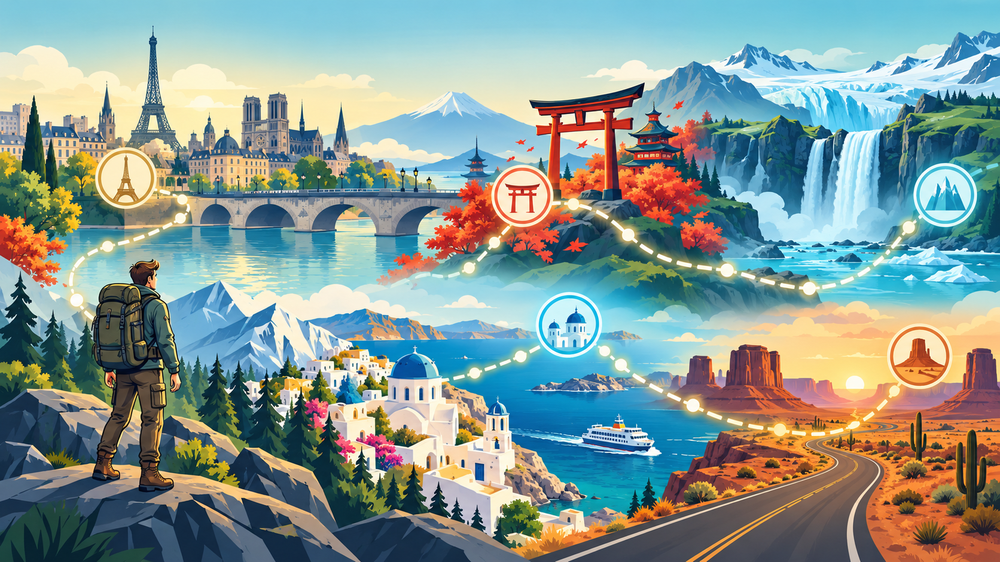

🏙️
Europe Explorer
Voyagez de Londres à Prague en passant par douze arrêts et six pays.
D'un city-hop européen gratuit aux îles, glaciers, temples, déserts et un itinéraire autour du monde.

Chaque itinéraire a sa propre distance, difficulté, destinations, histoires et temps d'achèvement estimé.
Voyagez de Londres à Prague en passant par douze arrêts et six pays.
Promenez-vous à travers les couleurs de l'érable, les bambous, les sanctuaires et la ville historique de Kyoto.
Traversez entre la Crète, Santorin, Délos et Mykonos sur les eaux vives de la mer Égée.
Suivez les cascades, les plages noires, les glaciers, les volcans et les paysages géothermiques.
Un long road trip américain de Chicago jusqu'au Pacifique à Los Angeles.
Reliez les continents avec des étapes à pied, des trains, des ferries et des vols longue distance.
La bibliothèque comprend des voyages en ville, des sentiers de pèlerinage, des côtes, des routes historiques, des îles, des routes de montagne et des expéditions mondiales.
Les arrêts débloquent des guides de la ville localisés, des faits intéressants, des monuments, de la nourriture, des liens Street View, des timbres, des certificats et des cartes de progression partageables.
Commencez par l'itinéraire gratuit Europe Explorer et choisissez votre prochain monde lorsque vous êtes prêt.